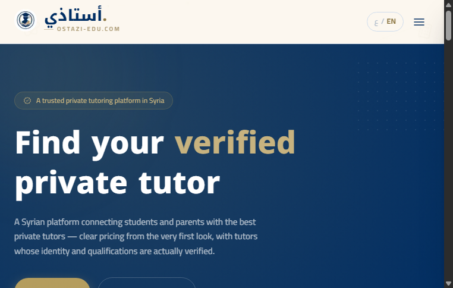

LIVE PRODUCT
Two-sided marketplace
Ostazi — ostazi-edu.com
A tutoring marketplace for Syria: phone/OTP auth, a full booking state machine, versioned commission ledger, verified teachers, institute & school accounts, and an admin ops panel. Built end to end — and running.
Next.jsNestJSPostgresPrismaVercel